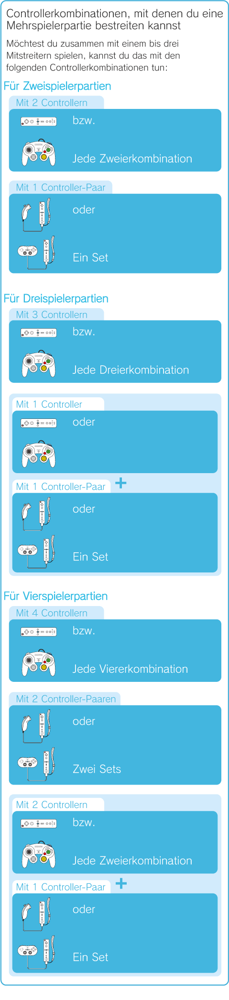
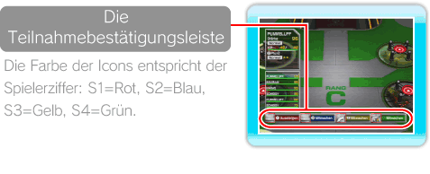
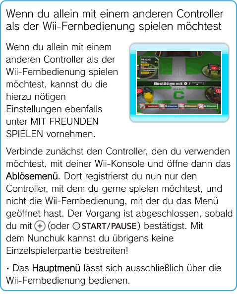

18 |
Terminaleinrichtungen für Mehrspielerpartien |
 |
|
Betrittst du die Terminaleinrichtung MIT FREUNDEN SPIELEN oder öffnest du das Pausenmenü (siehe S. 16: Das Pausenmenü), kannst du von dort aus eine Mehrspielerpartie aufsetzen. Die Bedienung ist in beiden Fällen gleich.
MIT FREUNDEN SPIELEN
Um eine Mehrspielerpartie spielen zu können, benötigst du allerdings genügend Pokémon und Controller für deine Mitstreiter! Besorge dir also schon im Voraus z. B. in einer der vielen Stufen eine ausreichende Zahl an Pokémon für dein Team. Findet die Mehrspielerpartie auf der Wii-Konsole eines Freundes statt, kannst du dich darauf vorbereiten, indem du eines deiner Pokémon über die Terminalfunktion IMPORT / EXPORT auf deiner Wii-Fernbedienung speicherst.
 Wie du eine Mehrspielerpartie aufsetzt Halte dich an die folgenden Anweisungen, um eine Mehrspielerpartie aufzusetzen.
Gehe zur Terminaleinrichtung MIT FREUNDEN SPIELEN, drücke
Wenn du eine Wii-Fernbedienung an der Wii-Konsole registrierst, ein Nunchuk bzw. einen Classic Controller mit der Wii-Fernbedienung verbindest oder einen Nintendo GameCube Controller an deine Wii-Konsole anschließt, öffnet sich am unteren Bildschirmrand die Teilnahmebestätigungsleiste.
Bestätige hier nun per Knopfdruck all jene Controller, die für die Partie benötigt werden. Hierzu werden die folgenden Knöpfe verwendet: Wii-Fernbedienung:
Hinweis: Im Fall des Nunchuk oder des Classic Controller öffnet sich die Leiste, auf der du deine Controller registrieren kannst, automatisch, sobald du sie an die Wii-Fernbedienung anschließt. 
Für jeden teilnehmenden Spieler öffnet sich nun ein eigenes Ablösemenü. Hier kann jeder wählen, welches Pokémon er steuern möchte.
Haben sich alle deine Mitstreiter für ein Pokémon entschieden, fehlt nur noch eine letzte Bestätigung. Hierzu muss einer der teilnehmenden Spieler, der nicht mit dem Nunchuk spielt,
Wurde die Mehrspielerpartie erfolgreich aufgesetzt, finden sich auch gleich alle teilnehmenden Spieler im Terminal ein. Unter jedem teilnehmenden Pokémon wird nun die zugehörige Spielerziffer angezeigt. Jeder Spieler steuert das Pokémon, das der Farbe aus der Teilnahmebestätigungsleiste entspricht.
Wie du eine Mehrspielerpartie beendest
Willst du eine Mehrspielerpartie beenden oder möchte einer deiner Mitstreiter aus dem Spiel aussteigen, müssen alle verbleibenden Spieler unter MIT FREUNDEN SPIELEN auswählen, mit welchem Pokémon sie gerne weiterspielen möchten. Spieler, die die Partie verlassen möchten, müssen diese im Ablösemenü unter MIT FREUNDEN SPIELEN per Knopfdruck abbrechen (siehe S. 7: Verwendung des Controllers). Ist dies geschehen, verschwindet das zugehörige Ablösemenü wieder vom Bildschirm. Haben sich die verbleibenden Spieler für ein Pokémon entschieden, erscheint erneut die Teilnahmebestätigungsleiste. Drückt nun einer der Teilnehmer
 IMPORT / EXPORT
Auf diese Weise kannst du Pokémon aus deinem Team z. B. auf eine Wii-Fernbedienung übertragen, um sie dann in Mehrspielerpartien auf der Wii-Konsole eines Freundes spielen zu können. Pokémon, die du auf einer Wii-Fernbedienung abgelegt hast, kannst du übrigens auch einem Freund schenken, indem du sie auf seine Wii-Konsole überträgst! Pokémon, deren Stärke aufgrund des Wunderschlüssels Einschränkungen unterliegt, können jedoch nicht übertragen werden. Du kannst bis zu 12 Pokémon auf einer Wii-Fernbedienung ablegen. Vorsicht! Wenn sich auf der betroffenen Wii-Fernbedienung fremde Daten befinden, werden diese durch den Exportvorgang unwiderruflich gelöscht (dies gilt nicht für Mii™-Daten)! Du kannst nur Pokémon, die aus Pokémon Rumble stammen, von einer Wii-Fernbedienung auf deine Wii-Konsole importieren. Vorsicht! Wenn du Pokémon verschickst, verschwinden sie sowohl von deiner Wii-Fernbedienung als auch von deiner Wii-Konsole.
Pokémon auf eine Wii-Konsole oder eine Wii-Fernbedienung importieren oder exportieren
Wenn du ein Pokémon auf eine Wii-Konsole oder eine Wii-Fernbedienung importieren oder exportieren möchtest, bestätige in der Terminaleinrichtung IMPORT / EXPORT mit JA und wähle dann mit |
 und bestätige mit JA oder wähle aus dem Pausenmenü die Option MIT FREUNDEN SPIELEN.
und bestätige mit JA oder wähle aus dem Pausenmenü die Option MIT FREUNDEN SPIELEN.  , Classic Controller:
, Classic Controller:  , Nintendo GameCube Controller:
, Nintendo GameCube Controller:  .
. (oder
(oder  .
. |
 |
 |